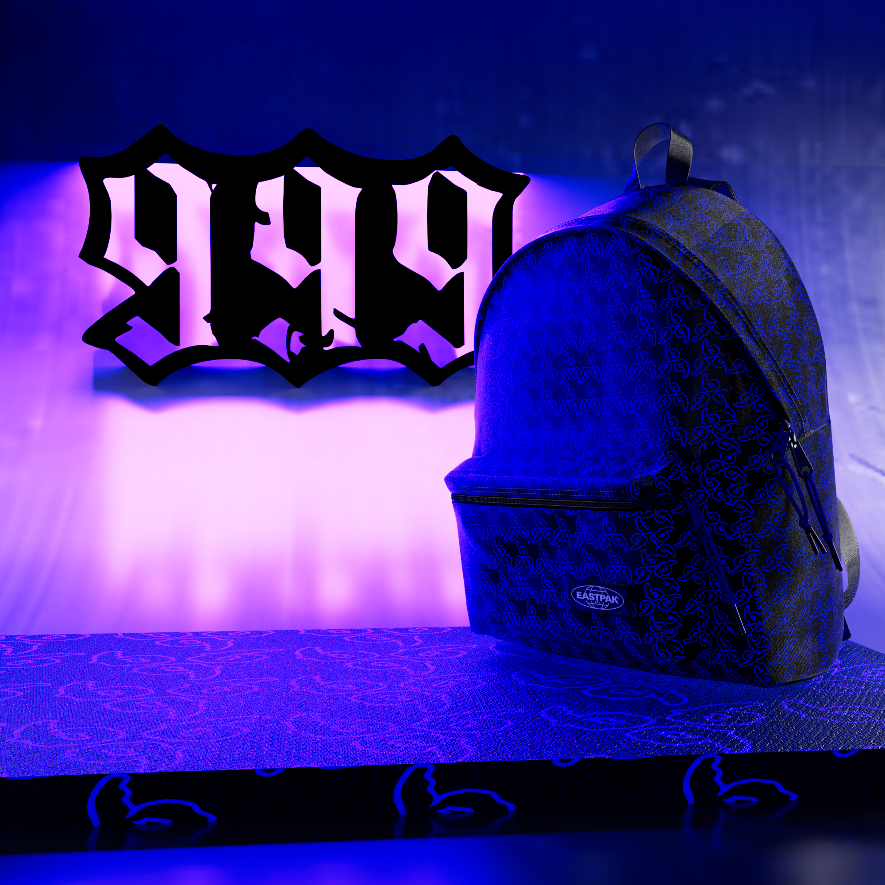

Branding Projects
This page gives an overview of all the branding projects that I have made in the past. From branding concepts to visual identity.
Projects



A project focused on creating a visual style and branding for a conceptual soda can brand.
View Project